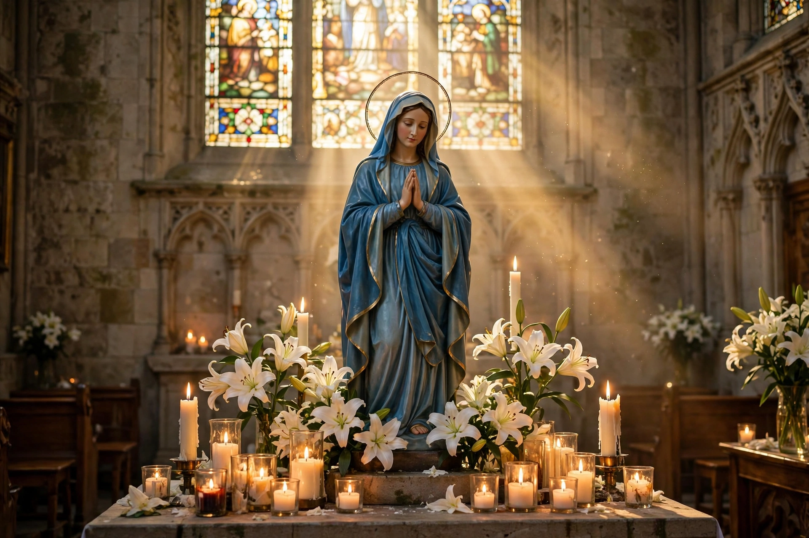

Marian devotions are external pious practices directed to the person of Mary, mother of Jesus, by members of certain Christian traditions, especially Catholicism, Eastern Orthodoxy, and some Anglicans and Lutherans.

| Traditions | Catholic, Orthodox, Anglican |
|---|---|
| Practices | Rosary, novenas, pilgrimages, hymns |
Devotions include the Rosary, the Angelus, novenas, consecration to Mary, wearing the scapular, May crownings, and pilgrimages to shrines such as Lourdes, Fátima, and Guadalupe. Marian feast days mark events in Mary's life.
Catholics distinguish veneration (dulia, and hyperdulia for Mary) from worship (latria) owed to God alone, holding that devotion to Mary leads to Christ. Many Protestants view some devotions critically.